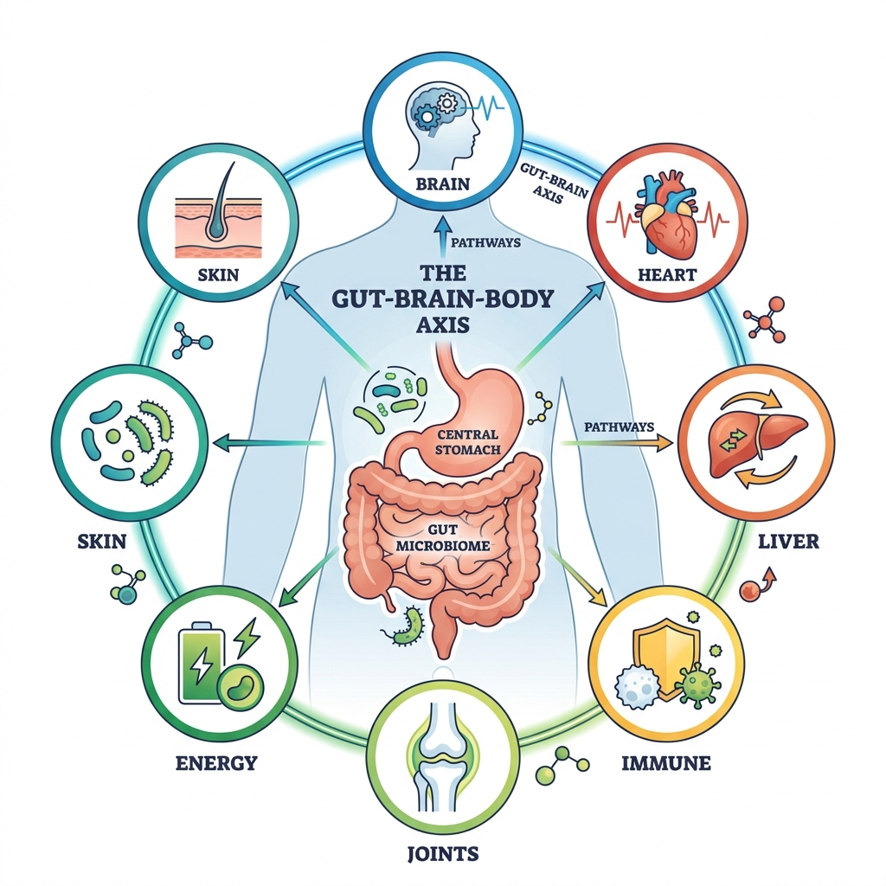
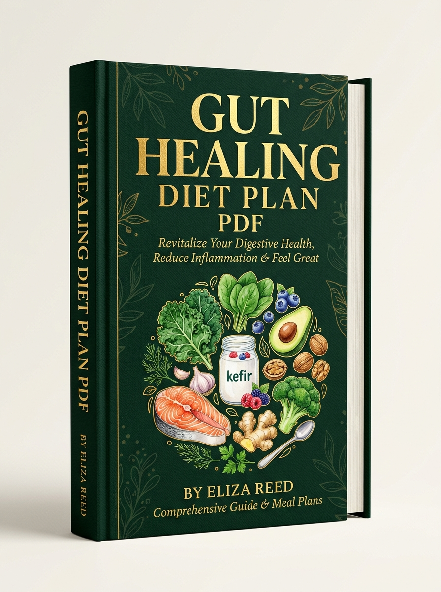
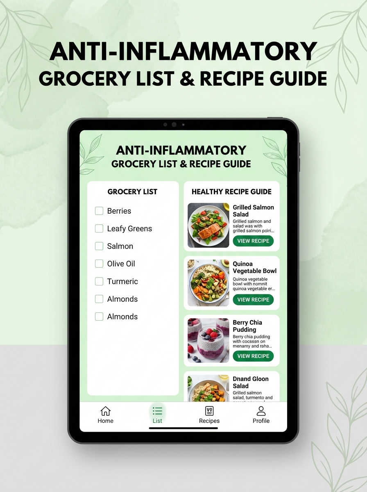
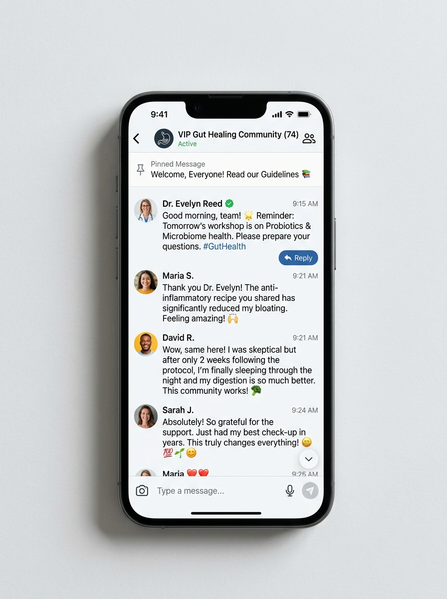

You Used to Be Confident, Energetic, Carefree.
Now You're Scared to Eat, Afraid to Travel, Avoiding Life Because Your Gut Won't Heal.
5,000+ long-term sufferers reversed IBS, GERD, H. Pylori & bloating permanently—after probiotics, PPIs, and diets all failed.
Discover the 5-Step Gut Lining Repair Protocol that finally worked.
Don't Just Take Our Word For It

What You'll Learn In This Exclusive workshop
The Hidden Cost of 'Managing' Symptoms Instead of Healing Damage

Your stomach is WHOLE LOT MORE than just digesting food under stress!
Every pill you swallow without fixing root gut lining damage creates cascade effects across your entire body.
- 🚩 Red Indicator 1: Short-term meds mask symptoms without healing gut mucosal lining.
- 🚩 Red Indicator 2: Chronic inflammation leads to brain fog, fatigue, joint pain, & skin flares.
- 🚩 Red Indicator 3: Trapped in a vicious cycle of endless tests and food anxiety.
- 🚩 Red Indicator 4: Missing out on family meals, travel, and social events.
- 🚩 Red Indicator 5: Quality of life deteriorates continuously day after day.
What Happens Next Is Up To You
Keep 'managing' symptoms with temporary pills and live in constant fear of your next gut flare-up.
Learn the 4-Step framework used by 5,000+ patients to heal their gut naturally and permanently.
Dr. Sinchana R.S.
India's Leading Gut Health Specialist
- ✅ Founder of Rebalance Gut Health Clinic
- ✅ Functional Medicine Specialist with 6+ years experience
- ✅ 5,000+ success stories across 12+ countries
- ✅ Featured in top health media & publications
"For years, I saw patients frustrated by endless prescriptions that provided temporary relief but never solved the root cause. My mission is to give you science-backed, natural protocols to reverse gut damage permanently so you can live freely without food anxiety."
Get Bonuses Worth ₹12,500



Frequently Asked Questions
Got questions? We've got answers.